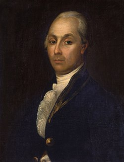

Aleksander Radischev (1749-1802)
Journey from St. Petersburg to Moscow (1790), first published under Radishchev's name in 1905, year of the first Russian Revolution
- Published with his own printing press anonymously
- Travelogue, a new sentimentalist genre (sharing individual emotions and impressions)
- Direction of travel - from city of reason (Petersburg) to city of emotion (Moscow)
- Attempt to discover Russia's heartland, which matters (how real people live)
- Dialogue
- New languages (high and low in the same text, addresses new subjects i.e. gender, sexuality, lower social classes)
- Journey to Moscow goes in parallel with journey towards truth
- Class and sexual violence; in Chapter "Zaitsovo" the traveler meets his old friend Krestiankin, a judge who defends peasants against their owners and loses his job. The owners raped a peasant bride on the eve of the wedding and peasants killed the family in retribution.
- The invention of friendship as a cultural value (traveler and Krestiankin)

fig.1 Portrait of Radischev (an unknown artist)